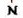
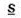
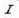

Word - Fontes e afins
Quando tratamos de fontes, há alguns aspectos a serem conhecidos:

- Deixa o texto em negrito. Ex: aluno -> aluno
Tecla de atalho = Ctrl + N (N de Negrito!)

- Deixa o texto sublinhado. Ex: proeja -> proeja
Tecla de atalho = Ctrl + S (S de Sublinhado!)

- Deixa o texto em itálico (de 'ladinho'). Ex: aula -> aula
Tecla de atalho = Ctrl + I (I de Itálico!)
Perceba que cada símbolo estiliza a fonte de modo diferente, e podem ser utilizados juntos, ex:
Carro -> S + I -> Carro
PS: Para lembrar dos atalhos do teclado, basta lembrar do nome das funções!!
Ctrl N - Negrito || Ctrl I - Itálico || Ctrl S - Sublinhado
Outra coisa!! Se você selecionar uma palavra que está com um estilo, e clicar no estilo novamente, a palavra volta ao normal!
Ex: Cachorro - Seleciono a palavra e clico no I denovo -> Cachorro
Abra seu word, teste, brinque e veja como funciona!!
Agora, depois de ver como funciona, está na hora da questão!! hehe
Ao selecionar o trecho "O dia está bonito" e aplicar Ctrl + N, depois Ctrl + I e por fim Ctrl + N denovo, como ficará o trecho em questão??